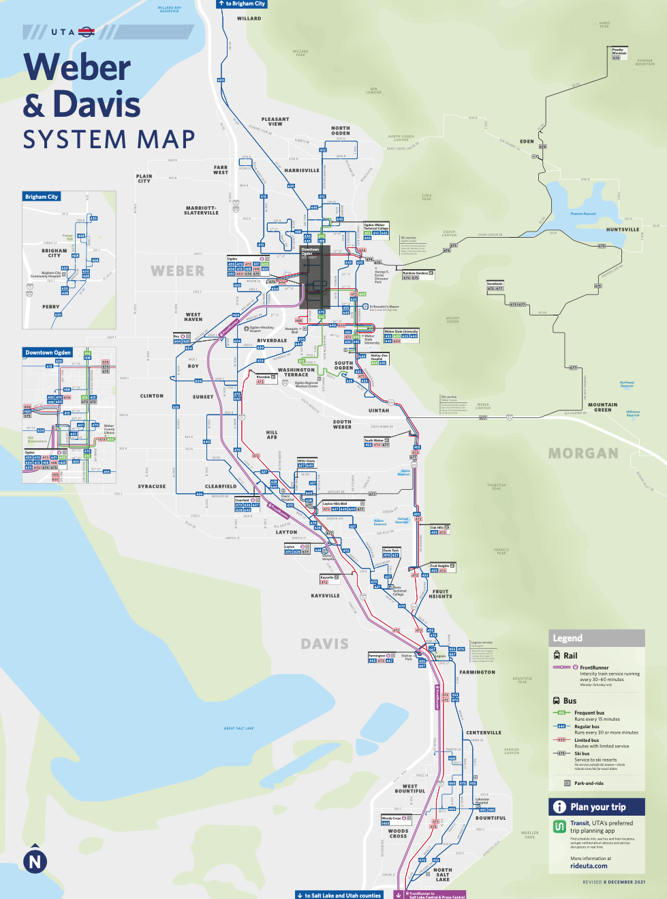

Clinton Bus Schedule

1. Type in "Clinton Bus Schedule"
2. Then click on the first link that shows up
3. Clicked on Learn more under Schedules and Maps
4. Click on Maps
5. Click on Davis & Weber County System Maps
6. Then you have the bus schedule map